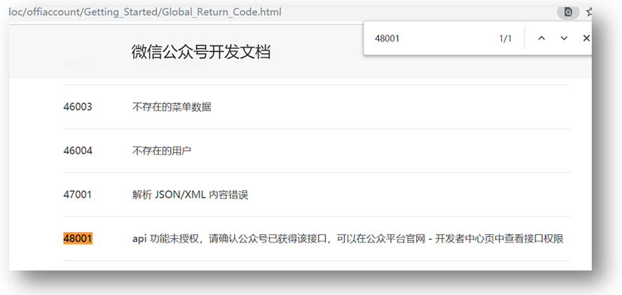
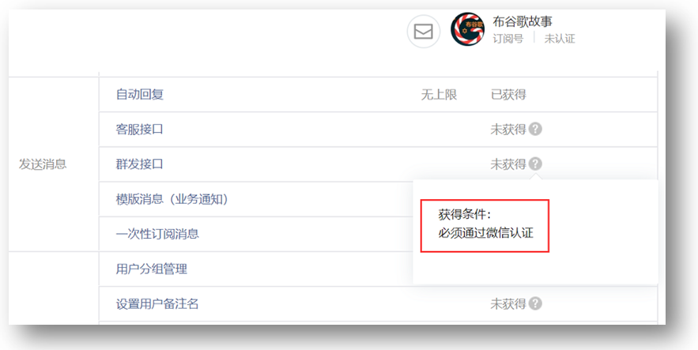
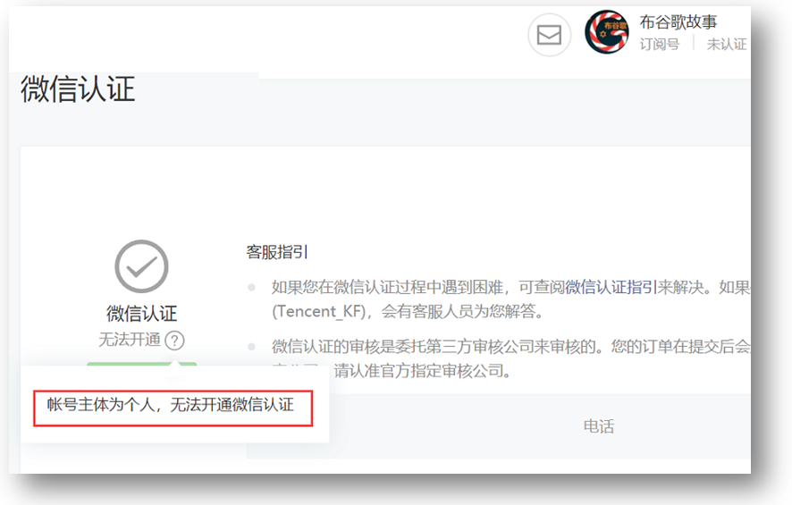
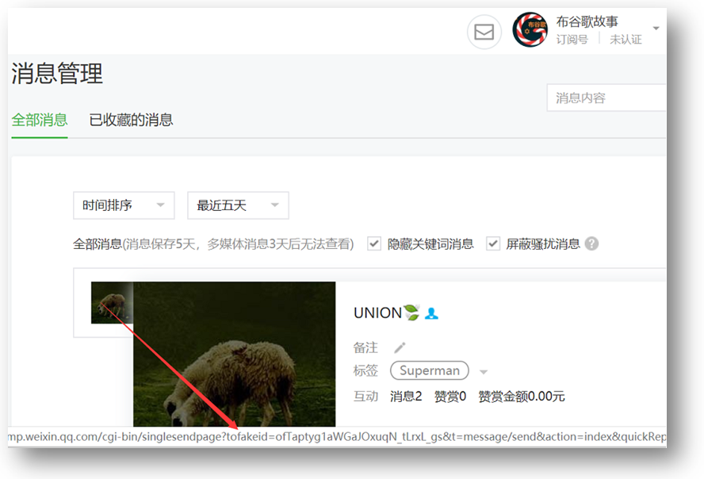

自己的订阅号，尝试通过写程序来给用户发消息。
结果呢，接口返回报错：errcode=48001,errmsg = api unauthorized hint: [ZlPULa02942276!]
去微信开发者文档官网查询返回码，说48001表示api未授权。

于是，微信公众平台-》开发-》接口权限，果真，群发消息接口提示“未获得”

那么，怎么获得呢？得通过微信认证。
你妹呀，认证时发现，微信竟然对个人主体关闭了认证功能。

------------我是么么哒分割线----------------
我们知道，通过微信的OAuth2.0接口可以获得用户的openid。而在微信公众平台里是否可以得到用户的openid呢？
网上果真有细心的网友告诉了答案：在“消息管理”菜单里，鼠标滑到用户头像上，浏览器底部显示的url里包含openid，正是如下示例链接里的tofakeid参数。
https://mp.weixin.qq.com/cgi-bin/singlesendpage?tofakeid=ofTaptyg1aWGaJOxuqN_tLrxL_gs&t=message/send&action=index&quickReplyId=441225519&token=1930537809&lang=zh_CN